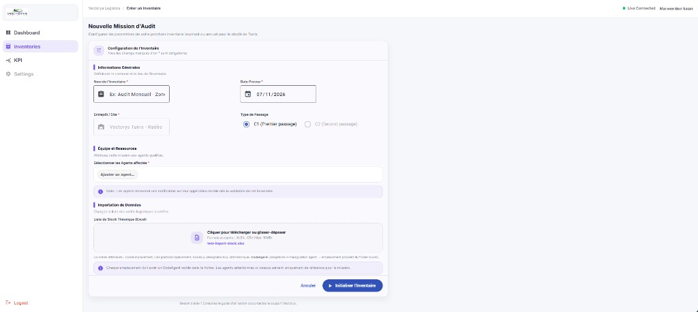
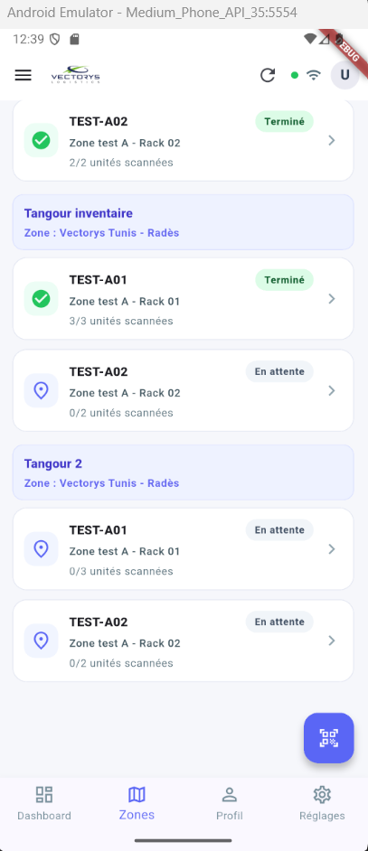
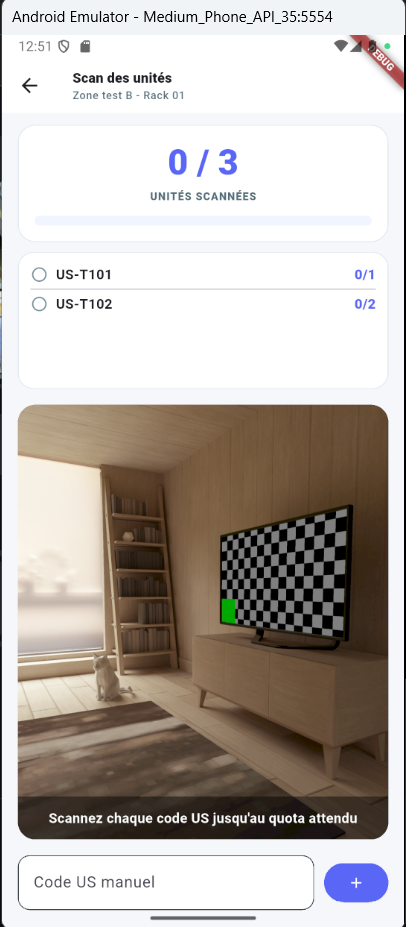
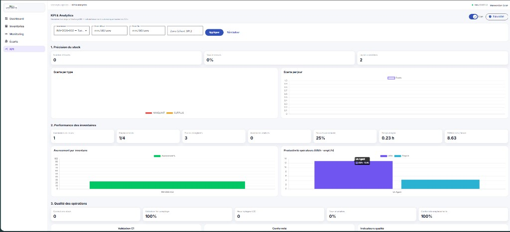
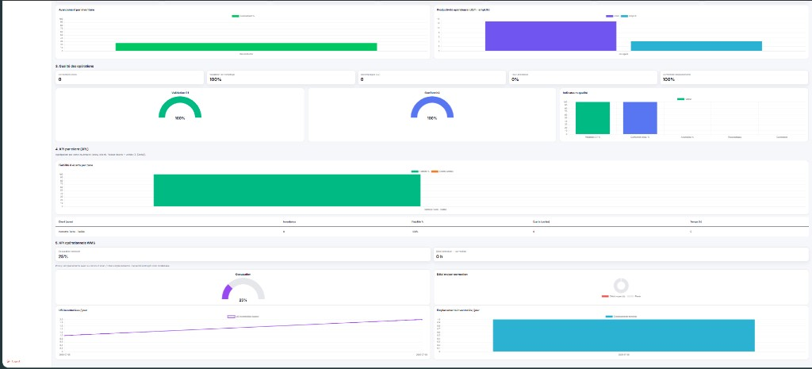
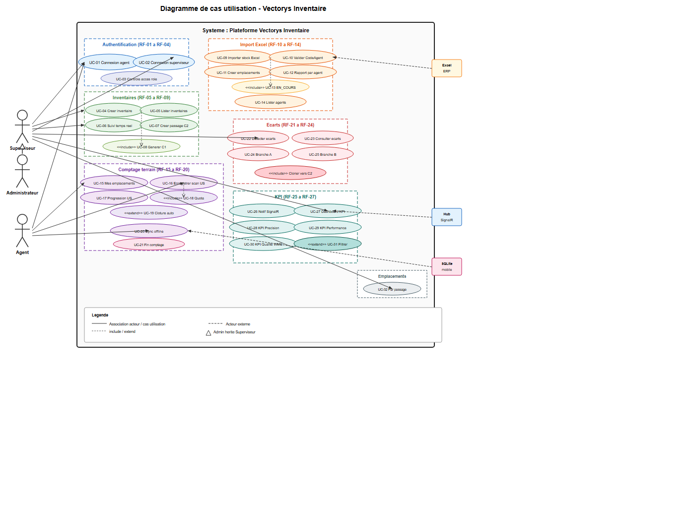
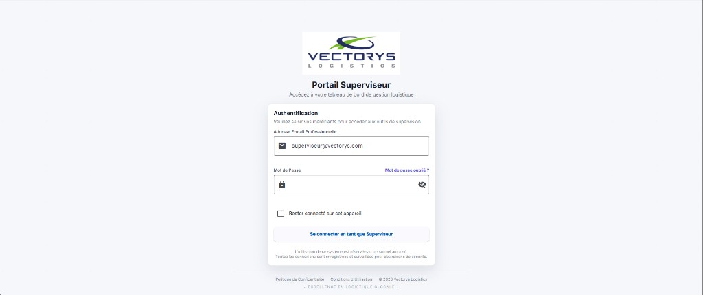
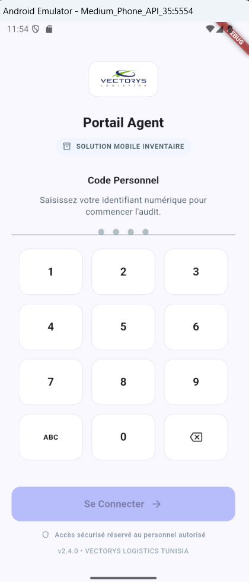
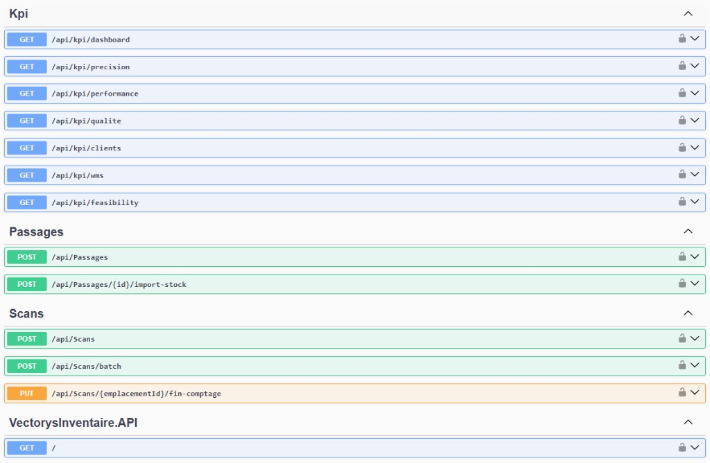

République Tunisienne
Ministère de l'Enseignement Supérieur et de la Recherche Scientifique
École Supérieure Privée d'Ingénierie et de Technologie — TEK-UP
Conception et développement d'une plateforme
d'inventaire logistique multi-canal
République Tunisienne
Ministère de l'Enseignement Supérieur et de la Recherche Scientifique
École Supérieure Privée d'Ingénierie et de Technologie — TEK-UP
Conception et développement d'une plateforme
d'inventaire logistique multi-canal
[À compléter par l'étudiant]
« À mes parents, pour leur soutien indéfectible tout au long de mon parcours académique. »
Je tiens à exprimer ma profonde gratitude à toutes les personnes qui ont contribué à la réalisation de ce projet de fin d'études. Je remercie tout d'abord M. Ferchichi Marwen, mon encadrant professionnel au sein de VECTORYS Tunisie, pour sa disponibilité, sa vision métier et ses orientations précieuses tout au long du stage. Mes remerciements s'adressent également à Mme Zrelli Siwar, mon encadrante académique à TEK-UP, pour le suivi rigoureux et les recommandations méthodologiques. Enfin, je remercie l'équipe VECTORYS et l'ensemble du corps enseignant de TEK-UP pour l'environnement de travail propice à l'apprentissage et à l'innovation.
Ce projet de fin d'études, réalisé au sein de VECTORYS Tunisie, porte sur la conception et le développement de Vectorys Inventaire, une plateforme d'inventaire logistique multi-canal. L'objectif est de digitaliser le cycle complet de l'inventaire physique en entrepôt : préparation (création de mission, import du stock théorique depuis Excel, assignation stricte des agents), exécution terrain (scan des unités de stock, quotas, clôture automatique des emplacements, mode hors ligne), traitement des écarts (détection MANQUANT/SURPLUS, recomptage ciblé) et pilotage (suivi temps réel SignalR, tableaux de bord KPI).
Sur le plan technique, la solution repose sur une architecture three-tier : une API REST ASP.NET Core 9 (Clean Architecture, CQRS/MediatR, FluentValidation, JWT, Entity Framework Core, ClosedXML), une application web Angular 19 destinée au superviseur, et une application mobile Flutter pour les agents, adossées à Microsoft SQL Server et à une base SQLite locale pour la résilience hors connexion. Le projet a été mené selon la méthode agile Scrum (sprints 0 à 9). La validation a combiné tests d'intégration API (Swagger, Postman), scénarios bout-en-bout import/comptage et contrôles en base de données. Le déploiement retenu pour l'exploitation interne est un serveur local sur le réseau d'entreprise.
Mots-clés : inventaire logistique, multi-canal, ASP.NET Core, Angular, Flutter, SQL Server, SignalR, Scrum, KPI, entrepôt, hors ligne.
This graduation project, carried out at VECTORYS Tunisia, focuses on the design and development of Vectorys Inventaire, a multi-channel logistics inventory platform. The goal is to digitize the full physical warehouse inventory cycle: preparation (mission creation, Excel import of theoretical stock, strict agent assignment), field execution (unit scanning, quotas, automatic location closure, offline mode), discrepancy handling (shortage/surplus detection, targeted recount), and supervision (real-time SignalR monitoring, KPI dashboards).
Technically, the solution follows a three-tier architecture: an ASP.NET Core 9 REST API (Clean Architecture, CQRS/MediatR, FluentValidation, JWT, Entity Framework Core, ClosedXML), an Angular 19 web portal for supervisors, and a Flutter mobile application for agents, backed by Microsoft SQL Server and a local SQLite store for offline resilience. The work was organized with Scrum (sprints 0–9). Validation combined API integration tests (Swagger, Postman), end-to-end import/counting scenarios, and database checks. The deployment model chosen for internal use is a local on-premises server on the corporate LAN.
Keywords: logistics inventory, multi-channel, ASP.NET Core, Angular, Flutter, SQL Server, SignalR, Scrum, KPI, warehouse, offline.
| Sigle | Signification |
|---|---|
| API | Application Programming Interface |
| C1 / C2 | Premier / second passage de comptage d'inventaire |
| CORS | Cross-Origin Resource Sharing |
| CQRS | Command Query Responsibility Segregation |
| DTO | Data Transfer Object |
| E2E | End-to-End (bout en bout) |
| EF Core | Entity Framework Core |
| ERP | Enterprise Resource Planning |
| HTTP / HTTPS | Hypertext Transfer Protocol (Secure) |
| IIS | Internet Information Services |
| JWT | JSON Web Token |
| KPI | Key Performance Indicator (indicateur de performance) |
| LAN | Local Area Network |
| ORM | Object-Relational Mapping |
| PDA | Personal Digital Assistant (terminal mobile) |
| PFE | Projet de Fin d'Études |
| REST | Representational State Transfer |
| RF / RNF | Exigence Fonctionnelle / Non Fonctionnelle |
| SGBD | Système de Gestion de Base de Données |
| SQL | Structured Query Language |
| SSMS | SQL Server Management Studio |
| TTL | Time To Live (durée de validité du jeton) |
| UC | Use Case (cas d'utilisation) |
| UML | Unified Modeling Language |
| US | Unité de Stock (code scanné) |
| WMS | Warehouse Management System |
Figure 1.1 — Architecture three-tier de la plateforme Vectorys Inventaire
Figure 1.2 — Flux métier principal du cycle d'inventaire Vectorys
Figure 1.3 — Cadre Scrum et répartition des rôles dans le projet
Figure 1.4 — Frise chronologique des sprints 0 à 9 (version finale)
Figure 2.1 — Écran de création d'inventaire et import du stock théorique
Figure 2.2 — Interface agent : zones, scan en boucle et progression US
Figure 2.3 — Dashboard KPI (précision, performance, qualité, clients, WMS)
Figure 2.4 — Diagramme de cas d'utilisation détaillé
Figure 3.1 — Architecture logique three-tier
Figure 3.2 — Diagramme de classes global (vue métier)
Figure 3.3 — Diagramme de séquence : authentification
Figure 3.4 — Interface d'authentification Angular
Figure 3.5 — Interface d'authentification Flutter
Figure 3.6 — Diagramme de séquence : création d'inventaire et génération C1
Figure 3.7 — Formulaire de création / configuration d'inventaire
Figure 3.8 — Vue conceptuelle de l'import Excel vers le modèle de données
Figure 3.9 — Import du stock théorique et validation CodeAgent
Figure 3.10 — Diagramme de séquence : scan, quota et notification
Figure 3.11 — Classes concernées par le comptage terrain
Figure 3.12 — Emplacements assignés (mobile)
Figure 3.13 — Scan en boucle et progression par unité de stock
Figure 3.14 — Diagramme de séquence : détection et Branche A
Figure 3.15 — Liste des écarts et choix de stratégie
Figure 3.16 — Diagramme de séquence : consultation KPI
Figure 3.17 — Suivi d'avancement en temps réel
Figure 3.18 — Tableau de bord KPI
Figure 4.1 — Chaîne de développement locale (clients → API → SQL Server)
Figure 4.2 — Couches de la solution .NET réalisées
Figure 4.3 — Portail web : authentification superviseur
Figure 4.4 — Application mobile : authentification agent
Figure 4.5 — Création d'inventaire et préparation de l'import
Figure 4.6 — Suivi d'avancement temps réel (canal web)
Figure 4.7 — Gestion des écarts (branche A)
Figure 4.8 — Tableau de bord KPI réalisé
Figure 4.9 — Liste des emplacements assignés (mobile)
Figure 4.10 — Boucle de scan et progression par US
Figure 4.11 — Démarrage du comptage sur un emplacement
Figure 4.12 — Progression du scan pendant le passage C1
Figure 4.13 — Chaîne de synchronisation offline (Flutter)
Figure 4.14 — Enchaînement des sprints de réalisation
Figure 4.15 — Topologie de déploiement sur serveur local
Figure 4.16 — API publiée sur le serveur local (Swagger)
Figure 4.17 — Portail superviseur déployé en local (à compléter)
Figure 4.18 — Application mobile configurée pour le serveur local (à compléter)
Figure 5.1 — Niveaux de test privilégiés
Figure 5.2 — Point d'entrée des tests API : Swagger
Figure 5.3 — Jeu de données Excel / rapport d'assignation (à compléter)
Figure 5.4 — Test d'intégration API (Postman) (à compléter)
Figure 5.5 — Étape superviseur : création avant import de test
Figure 5.6 — Étape agent : liste filtrée des emplacements
Figure 5.7 — Étape agent : progression du scan et quotas
Figure 5.8 — Vérification BDD après scénario E2E (à compléter)
Figure 5.9 — Chaîne vérifiée lors des tests offline
Figure 5.10 — Contrôle superviseur : suivi d'avancement
Figure 5.11 — Contrôle superviseur : écarts détectés
Figure 5.12 — Contrôle superviseur : indicateurs KPI
Figure 5.13 — Séance de validation / démonstration (optionnel)
Tableau 1.1 — Stack technologique de la solution
Tableau 1.2 — Découpage des sprints 0 à 9
Tableau 2.1 — Acteurs du système
Tableau 2.2 — Exigences d'authentification (RF-01 à RF-04)
Tableau 2.3 — Exigences inventaires et passages
Tableau 2.4 — Exigences d'import et d'assignation
Tableau 2.5 — Exigences de comptage terrain
Tableau 2.6 — Exigences de gestion des écarts
Tableau 2.7 — Exigences KPI et temps réel
Tableau 2.8 — Exigences non fonctionnelles (RNF)
Tableau 2.9 — Catalogue des cas d'utilisation
Tableau 2.10 — Backlog produit (user stories par sprint)
Tableau 2.11 — Matrice de traçabilité exigences / composants
Tableau 3.1 — Énumérations du domaine métier
Tableau 3.2 — Cas d'utilisation détaillés (authentification … pilotage)
Tableau 3.3 — Vue synthétique des endpoints API
Tableau 4.1 — Environnement de développement et outillage
Tableau 4.2 — Migrations EF Core
Tableau 4.3 — Endpoints métier et hub SignalR
Tableau 4.4 — Livrables techniques par sprint
Tableau 4.5 — Architecture de déploiement sur serveur local
Tableau 4.6 — Difficultés rencontrées et solutions
Tableau 5.1 — Niveaux de test et outils
Tableau 5.2 — Configuration de l'environnement de test
Tableau 5.3 — Jeu de données Excel de référence
Tableau 5.4 — Cas de test API (T-API-01 à T-API-13)
Tableau 5.5 — Critères d'acceptation du scénario E2E
Tableau 5.6 — Cas de test offline
Tableau 5.7 — Matrice de couverture des exigences
Tableau 5.8 — Vérifications non fonctionnelles
Dédicace
Remerciements
Résumé
Abstract
Liste des abréviations
Liste des figures
Liste des tableaux
Introduction générale
Chapitre 1 — Cadre du projet
1.1 Cadre général du projet
1.2 Étude de l'existant
1.3 Problématique
1.4 Solution proposée
1.5 Méthodologie de gestion de projet
Conclusion du chapitre 1
Chapitre 2 — Analyse et spécification des besoins
2.1 Identification des acteurs
2.2 Analyse des besoins fonctionnels
2.3 Besoins non fonctionnels
2.4 Diagramme de cas d'utilisation
2.5 Scénario principal de comptage C1
2.6 Backlog produit et user stories
2.7 Matrice de traçabilité
Conclusion du chapitre 2
Chapitre 3 — Conception de la solution
3.1 Architecture globale de la solution
3.2 Modèle de données et diagramme de classes global
3.3 Conception par fonctionnalité
3.3.1 Authentification
3.3.2 Création et configuration d'inventaire
3.3.3 Import du stock théorique
3.3.4 Comptage terrain
3.3.5 Gestion des écarts
3.3.6 Pilotage et suivi
3.4 Vue synthétique de l'API
Conclusion du chapitre 3
Chapitre 4 — Réalisation technique
4.1 Environnement de développement et outillage
4.2 Réalisation de l'API ASP.NET Core
4.3 Réalisation de l'application web de supervision
4.4 Réalisation de l'application mobile agent
4.5 Déroulement des sprints et livrables
4.6 Déploiement sur serveur local
4.7 Difficultés rencontrées et solutions retenues
Conclusion du chapitre 4
Chapitre 5 — Tests et validation
5.1 Stratégie et niveaux de test
5.2 Environnement et jeux de données
5.3 Tests d'API (Swagger et Postman)
5.4 Scénario bout-en-bout : import et comptage
5.5 Tests mobile, offline et supervision
5.6 Matrice de couverture des exigences
5.7 Tests non fonctionnels
5.8 Synthèse des résultats et limites
Conclusion du chapitre 5
Conclusion générale
Perspectives
Bibliographie
La gestion des stocks constitue un enjeu stratégique pour les opérateurs logistiques. Une discordance entre le stock théorique enregistré dans les systèmes d'information et la réalité physique observée sur le terrain engendre des pertes financières, des ruptures de service et une dégradation de la relation client. L'inventaire physique demeure une pratique incontournable, malgré sa lourdeur organisationnelle.
VECTORYS Tunisie fait face à cette réalité au quotidien. Les inventaires y étaient pilotés à l'aide d'outils hétérogènes (Excel, terminaux dédiés, ERP hérités) ne facilitant ni la coordination terrain, ni le traitement structuré des écarts. C'est dans ce cadre que s'inscrit le présent projet, intitulé « Conception et développement d'une plateforme d'inventaire logistique multi-canal ».
La plateforme Vectorys Inventaire repose sur trois composants : une API REST ASP.NET Core 9 (Clean Architecture, CQRS/MediatR), une application web Angular 19 de supervision et une application mobile Flutter pour le scan terrain. SQL Server centralise les données ; SignalR assure le temps réel ; SQLite local permet le mode hors ligne. Le projet a été mené selon Scrum en dix sprints, tous achevés.
Ce rapport décrit progressivement le travail réalisé : le chapitre 1 présente le cadre du projet ; le chapitre 2 analyse les besoins ; le chapitre 3 détaille la conception ; le chapitre 4 expose la réalisation par sprint ; le chapitre 5 aborde les tests et la validation.
Ce chapitre situe le projet dans son environnement organisationnel et métier, formule la problématique, décrit la solution retenue et expose la méthodologie Scrum adoptée.
VECTORYS Tunisie est une entreprise de logistique et supply chain implantée à Radès. Elle assure la gestion d'entrepôts, la préparation de commandes et le contrôle des flux pour ses clients. Les inventaires tournants ou annuels mobilisent superviseurs et agents terrain ; leur précision conditionne directement la fiabilité des opérations de picking et d'expédition.
Le stage s'est déroulé sous l'encadrement de M. Ferchichi Marwen (VECTORYS) et de Mme Zrelli Siwar (TEK-UP), dans le cadre du diplôme d'ingénieur en Génie Logiciel et Systèmes d'Information.
Les objectifs principaux du projet ont été les suivants :
Avant le projet, le processus reposait sur l'extraction Excel depuis l'ERP Sage, la répartition manuelle des zones, une saisie partielle sur terminaux et une consolidation tardive. Les limites identifiées étaient : absence de source de vérité temps réel, risques de doublons, suivi d'avancement difficile, traitement des écarts non standardisé et KPI produits tardivement.
Les WMS généralistes et les applications de scan génériques ne couvrent pas la logique métier VECTORYS (passages C1/C2, assignation stricte CodeAgent, workflows d'écarts). Un espace fonctionnel dédié s'est imposé.
Comment concevoir et développer une plateforme d'inventaire logistique multi-canal, fiable et évolutive, capable de synchroniser en temps réel le comptage terrain avec le pilotage superviseur, tout en garantissant la résilience hors connexion et le traitement structuré des écarts ?
Le système suit une architecture three-tier : couche présentation (Angular + Flutter), couche métier (API ASP.NET Core, MediatR, FluentValidation, SignalR) et couche données (SQL Server, EF Core). La figure 1.1 illustre cette organisation.
Cinq flux structurants ont guidé la conception (figure 1.2) :
| Composant | Technologie | Rôle |
|---|---|---|
| Backend | ASP.NET Core 9, C# | API REST, SignalR, JWT |
| ORM | Entity Framework Core 9 | SQL Server, migrations |
| Web | Angular 19, Chart.js | Supervision, KPI |
| Mobile | Flutter, SQLite | Scan, mode offline |
| Import/Export | ClosedXML | Fichiers Excel |
Le projet a été mené selon Scrum, méthode agile adaptée aux projets logiciels évolutifs. Des sprints de une à deux semaines ont livré des incréments testables, de la fondation technique au déploiement. La figure 1.3 présente le cadre Scrum appliqué au projet.
Le tableau ci-dessous résume le découpage fonctionnel et les livrables réalisés. L'ensemble des dix sprints (0 à 9) a été mené à terme. La figure 1.4 en propose une vue chronologique.
| Sprint | Objectif principal |
|---|---|
| 0 | Fondations : structure solution, base de données et dépôt Git |
| 1 | Authentification JWT pour les interfaces web et mobile |
| 2 | Création d'inventaire, import Excel et assignation des agents |
| 3 | Scan Flutter et SignalR temps réel |
| 4 | Mode hors ligne et synchronisation batch |
| 5 | Détection et gestion des écarts (branche A) |
| 6 | Branche B, clôture et export Excel final |
| 7 | Module KPI et analytics (Chart.js) |
| 8 | Tests automatisés et documentation Swagger |
| 9 | Déploiement IIS, APK terrain et validation end-to-end |
Ce découpage a permis une montée en charge progressive : fondations, métier, résilience offline, analyse des écarts et KPI, puis tests et déploiement. À l'issue du sprint 9, la plateforme couvre l'intégralité du cycle d'inventaire prévu.
Ce chapitre a situé le projet dans son contexte VECTORYS, formulé la problématique et présenté la solution Vectorys Inventaire ainsi que la méthodologie Scrum retenue. Le chapitre suivant détaillera l'analyse des besoins fonctionnels et non fonctionnels, les acteurs et les spécifications du système.
Ce chapitre traduit les objectifs métier en exigences formalisées. Il identifie les acteurs, détaille les besoins fonctionnels et non fonctionnels, présente le diagramme de cas d'utilisation, le backlog produit et la matrice de traçabilité vers les sprints réalisés.
L'analyse des besoins constitue une étape structurante entre le cadrage du projet (chapitre 1) et sa conception technique (chapitre 3). Elle s'appuie sur des entretiens avec l'encadrant professionnel, l'observation des pratiques d'inventaire à VECTORYS Radès et l'analyse des fichiers Excel existants. Les exigences ont été priorisées dans un backlog Scrum et implémentées au fil des dix sprints, tous achevés dans la version finale du produit.
Le système distingue trois rôles applicatifs, matérialisés par l'énumération RoleEnum :
| Acteur | Rôle technique | Canal | Responsabilités principales |
|---|---|---|---|
| Superviseur | SUPERVISEUR | Application web Angular | Créer les inventaires, importer le stock théorique, suivre l'avancement temps réel, détecter et traiter les écarts, consulter les KPI. |
| Agent de comptage | AGENT | Application mobile Flutter | S'authentifier via son code personnel, consulter ses emplacements assignés, scanner les unités de stock, synchroniser les données offline. |
| Administrateur | ADMIN | Application web | Gérer les comptes utilisateurs, disposer des mêmes privilèges de supervision que le superviseur. |
L'authentification est dual-mode : l'agent se connecte avec son CodePersonnel (ex. AG001), tandis que le superviseur utilise email et mot de passe. Un JWT est émis avec une durée de validité de 8 h (agent) ou 24 h (superviseur/admin), transportant les claims sub, role, nom et codePersonnel.
Les besoins fonctionnels ont été regroupés par domaine métier. Chaque exigence est identifiée par un code RF-xx et associée à au moins un acteur.
| ID | Exigence | Acteur | Priorité |
|---|---|---|---|
| RF-01 | Connexion agent par code personnel avec émission JWT | Agent | Haute |
| RF-02 | Connexion superviseur/admin par email et mot de passe | Superviseur | Haute |
| RF-03 | Contrôle d'accès par rôle sur chaque endpoint API | Système | Haute |
| RF-04 | Rejet des comptes inactifs (Actif = false) | Système | Moyenne |
| ID | Exigence | Acteur | Priorité |
|---|---|---|---|
| RF-05 | Créer un inventaire avec référence auto INV-{année}-{seq} | Superviseur | Haute |
| RF-06 | Créer automatiquement le passage C1 à la création | Système | Haute |
| RF-07 | Lister les inventaires avec pagination | Superviseur | Moyenne |
| RF-08 | Créer un passage C2 pour recomptage | Superviseur | Haute |
| RF-09 | Suivre l'avancement temps réel par agent et emplacement | Superviseur | Haute |
| ID | Exigence | Acteur | Priorité |
|---|---|---|---|
| RF-10 | Importer un fichier Excel (.xlsx) sur un passage | Superviseur | Haute |
| RF-11 | Valider les colonnes obligatoires dont CodeAgent | Système | Haute |
| RF-12 | Créer emplacements, lignes StockThéorique et assignations | Système | Haute |
| RF-13 | Produire un rapport d'import par agent | Superviseur | Moyenne |
| RF-14 | Passer l'inventaire au statut EN_COURS après import réussi | Système | Haute |

| ID | Exigence | Acteur | Priorité |
|---|---|---|---|
| RF-15 | Afficher uniquement les emplacements assignés à l'agent connecté | Agent | Haute |
| RF-16 | Enregistrer un scan de code US avec horodatage | Agent | Haute |
| RF-17 | Refuser les scans au-delà du quota QteThéorique par US | Système | Haute |
| RF-18 | Clôturer automatiquement l'emplacement (TERMINE) quand tous les US sont couverts | Système | Haute |
| RF-19 | Afficher la progression par US (scanné / théorique) | Agent | Haute |
| RF-20 | Synchroniser les scans offline par batch sans doublon (IdLocalFlutter) | Agent | Haute |



| ID | Exigence | Acteur | Priorité |
|---|---|---|---|
| RF-21 | Détecter les écarts MANQUANT et SURPLUS sur emplacements TERMINE | Superviseur | Haute |
| RF-22 | Lister les écarts par inventaire avec agrégats | Superviseur | Haute |
| RF-23 | Appliquer la branche A : marquer écarts traités, créer C2, cloner emplacements | Superviseur | Haute |
| RF-24 | Supporter la branche B (recomptage global et fusion) | Superviseur | Moyenne |
| ID | Exigence | Acteur | Priorité |
|---|---|---|---|
| RF-25 | Notifier le superviseur en temps réel (SignalR) à chaque scan et clôture | Superviseur | Haute |
| RF-26 | Consulter les KPI précision, performance, qualité, clients, WMS | Superviseur | Haute |
| RF-27 | Filtrer les KPI par inventaire, période et zone | Superviseur | Moyenne |


Les exigences non fonctionnelles garantissent la qualité d'exploitation de la plateforme en environnement industriel.
| ID | Catégorie | Exigence | Solution retenue |
|---|---|---|---|
| RNF-01 | Sécurité | Authentification et autorisation robustes | JWT HMAC-SHA256, policies SuperviseurOnly / AgentOnly, BCrypt |
| RNF-02 | Performance | Import Excel de milliers de lignes | Insertion par batch (1000 lignes), limite upload 50 Mo |
| RNF-03 | Disponibilité | Continuité en zone Wi-Fi faible | SQLite local + sync batch au retour réseau |
| RNF-04 | Intégrité | Pas de doublons offline | Index unique IdLocalFlutter, idempotence API |
| RNF-05 | Temps réel | Latence faible superviseur | SignalR, groupes par inventaireId |
| RNF-06 | Maintenabilité | Séparation des responsabilités | Clean Architecture, CQRS MediatR, FluentValidation |
| RNF-07 | Observabilité | Traçabilité des erreurs | Serilog, middleware ExceptionHandlingMiddleware |
| RNF-08 | Interopérabilité | API documentée | Swagger OpenAPI, JSON camelCase |
| RNF-09 | Ergonomie | Scan rapide terrain | Boucle scan Flutter, retour visuel/haptique, quotas |
| RNF-10 | Scalabilité KPI | Requêtes agrégées performantes | Index SQL Sprint 7, vues KPI optionnelles |
Le diagramme de cas d'utilisation UML ci-dessous modélise l'ensemble des interactions entre les acteurs identifiés (section 2.1) et le système Vectorys Inventaire. Il couvre les trente-deux cas d'utilisation (UC-01 à UC-32) regroupés en sept packages fonctionnels, en correspondance directe avec les exigences RF-01 à RF-27 et les endpoints API implémentés. L'administrateur hérite par généralisation des cas du superviseur ; l'agent n'accède qu'aux cas de comptage terrain.

Le tableau suivant récapitule les cas d'utilisation principaux, leurs acteurs et les exigences associées.
| ID | Cas d'utilisation | Acteur(s) | Exigence | API / composant |
|---|---|---|---|---|
| UC-01 | Connexion agent (JWT 8h) | Agent | RF-01 | POST /api/auth/login |
| UC-02 | Connexion superviseur/admin (JWT 24h) | Superviseur, Admin | RF-02 | POST /api/auth/login |
| UC-03 | Contrôle d'accès par rôle | Système | RF-03, RF-04 | Policies JWT |
| UC-04 | Créer un inventaire (+ réf. auto) | Superviseur | RF-05 | POST /api/inventaires |
| UC-05 | Lister les inventaires | Superviseur | RF-07 | GET /api/inventaires |
| UC-06 | Suivi temps réel par agent | Superviseur | RF-09 | GET /api/inventaires/{id}/suivi-temps-reel |
| UC-07 | Créer passage C2 | Superviseur | RF-08 | POST /api/passages |
| UC-08 | Générer passage C1 automatiquement | Système | RF-06 | <<include>> UC-04 |
| UC-09 | Importer stock théorique Excel | Superviseur, Excel | RF-10 | POST /api/passages/{id}/import-stock |
| UC-10 | Valider colonne CodeAgent obligatoire | Système | RF-11 | StockImportService |
| UC-11 | Créer emplacements et stock théorique | Système | RF-12 | ImportStockCommandHandler |
| UC-12 | Consulter rapport d'import par agent | Superviseur | RF-13 | ImportStockResultDto |
| UC-13 | Passer inventaire EN_COURS | Système | RF-14 | <<include>> UC-09 |
| UC-14 | Lister agents actifs | Superviseur | — | GET /api/agents |
| UC-15 | Consulter mes emplacements assignés | Agent | RF-15 | GET /api/emplacements/mes-emplacements |
| UC-16 | Enregistrer scan code US | Agent | RF-16 | POST /api/scans |
| UC-17 | Afficher progression par US | Agent | RF-19 | GetMesEmplacements + scan loop |
| UC-18 | Vérifier quota QteThéorique | Système | RF-17 | ScanCompletionService |
| UC-19 | Clôturer emplacement (TERMINE) auto | Système | RF-18 | <<extend>> UC-16 |
| UC-20 | Synchroniser scans offline (batch) | Agent, SQLite | RF-20 | POST /api/scans/batch |
| UC-21 | Terminer comptage emplacement | Agent | — | PUT /api/scans/{id}/fin-comptage |
| UC-22 | Détecter écarts MANQUANT/SURPLUS | Superviseur | RF-21 | POST /api/ecarts/detecter/{id} |
| UC-23 | Consulter liste des écarts | Superviseur | RF-22 | GET /api/ecarts |
| UC-24 | Appliquer branche A (→ C2) | Superviseur | RF-23 | POST /api/ecarts/branche-a |
| UC-25 | Appliquer branche B (recomptage) | Superviseur | RF-24 | Workflow C2 global |
| UC-26 | Recevoir notifications SignalR | Superviseur, Hub | RF-25 | /hubs/inventaire |
| UC-27 | Consulter dashboard KPI agrégé | Superviseur | RF-26 | GET /api/kpi/dashboard |
| UC-28 | KPI Précision (écarts, taux) | Superviseur | RF-26 | GET /api/kpi/precision |
| UC-29 | KPI Performance (avancement, productivité) | Superviseur | RF-26 | GET /api/kpi/performance |
| UC-30 | KPI Qualité, clients, WMS | Superviseur | RF-26 | GET /api/kpi/qualite, /clients, /wms |
| UC-31 | Filtrer KPI (inventaire, période, zone) | Superviseur | RF-27 | <<extend>> UC-27 |
| UC-32 | Consulter emplacements par passage | Superviseur | — | GET /api/emplacements |
Le scénario nominal ci-dessous décrit le déroulement type d'un inventaire tel qu'il a été implémenté et validé sur la plateforme. Les figures 2.1 à 2.3 illustrent respectivement la préparation superviseur, le comptage agent et le pilotage KPI.
Le backlog produit a été structuré en dix sprints. Le tableau ci-dessous présente les user stories clés livrées (format : En tant que… Je veux… Afin de…).
| Sprint | User story (résumé) | Statut |
|---|---|---|
| 0 | En tant que développeur, je veux une solution Clean Architecture avec BDD, afin de poser les fondations. | Livré |
| 1 | En tant qu'agent/superviseur, je veux m'authentifier par JWT, afin d'accéder à mon espace sécurisé. | Livré |
| 2 | En tant que superviseur, je veux créer un inventaire et importer Excel, afin de préparer le C1. | Livré |
| 3 | En tant qu'agent, je veux scanner les US et voir la progression, afin de compter efficacement. | Livré |
| 4 | En tant qu'agent, je veux scanner hors ligne, afin de continuer sans réseau. | Livré |
| 5 | En tant que superviseur, je veux détecter et traiter les écarts (branche A), afin de lancer le C2. | Livré |
| 6 | En tant que superviseur, je veux clôturer et exporter les résultats, afin de finaliser l'inventaire. | Livré |
| 7 | En tant que superviseur, je veux un dashboard KPI, afin de piloter la performance. | Livré |
| 8 | En tant que développeur, je veux des tests et Swagger, afin de garantir la qualité. | Livré |
| 9 | En tant qu'exploitant, je veux déployer sur IIS et APK, afin de mettre en production. | Livré |
La matrice suivante assure la couverture des exigences fonctionnelles par sprint et composant.
| Exigence | Sprint | API | Web | Mobile |
|---|---|---|---|---|
| RF-01 à RF-04 | 1 | AuthController | Login | Login |
| RF-05 à RF-09 | 2 | InventairesController | Création, suivi | — |
| RF-10 à RF-14 | 2 | PassagesController | Import wizard | — |
| RF-15 à RF-19 | 3 | ScansController | SignalR | Scan loop |
| RF-20 | 4 | Scans/batch | — | Offline sync |
| RF-21 à RF-24 | 5–6 | EcartsController | Écarts UI | — |
| RF-25 à RF-27 | 7 | KpiController, Hub | Dashboard KPI | — |
Ce chapitre a formalisé les acteurs, les besoins fonctionnels (RF-01 à RF-27) et non fonctionnels (RNF-01 à RNF-10) de la plateforme Vectorys Inventaire. Le diagramme de cas d'utilisation (figure 2.4), les captures d'écran des interfaces superviseur et agent, ainsi que la matrice de traçabilité, confirment que l'ensemble des exigences prioritaires a été couvert par les dix sprints réalisés. Le chapitre 3 détaillera la conception architecturale, le modèle de données et les diagrammes UML qui concrétisent ces spécifications.
République Tunisienne
Ministère de l'Enseignement Supérieur et de la Recherche Scientifique
École Supérieure Privée d'Ingénierie et de Technologie — TEK-UP
Conception et développement d'une plateforme
d'inventaire logistique multi-canal
Ce chapitre traduit les besoins formalisés au chapitre 2 en une conception technique exploitable. Il s'appuie sur le diagramme de cas d'utilisation global (Figure 2.4) et détaille, pour chaque domaine fonctionnel, un cas d'utilisation raffiné, les classes concernées et/ou un diagramme de séquence. Les captures d'écran sont prévues sous forme d'emplacements réservés, à compléter ultérieurement.
La conception vise trois objectifs : (1) garantir la cohérence du modèle métier entre les canaux web et mobile, (2) isoler la logique métier dans l'API selon une Clean Architecture (CQRS/MediatR), et (3) préparer une réalisation progressive alignée sur les sprints 0 à 9, tous menés à terme.
Le fil conducteur reprend la structure du use case global : authentification, gestion des inventaires, comptage terrain, gestion des écarts, puis pilotage. Chaque sous-section suit le même schéma : rappel du cas global, spécification détaillée, diagramme(s) UML, justification des choix, emplacement pour illustration.
La plateforme Vectorys Inventaire repose sur une architecture multi-canal three-tier. La couche présentation regroupe l'application web Angular (superviseur / administrateur) et l'application mobile Flutter (agent). La couche métier est exposée par une API REST ASP.NET Core 9, structurée en Domain, Application (commands/queries MediatR, FluentValidation) et Infrastructure (EF Core, SQL Server, ClosedXML, SignalR). La figure 3.1 rappelle cette organisation.
Ce choix assure une source de vérité unique côté serveur, une séparation nette des responsabilités et une capacité d'évolution (nouveaux KPI, nouveaux passages) sans casser les clients. Le mode hors ligne mobile s'appuie sur SQLite local et une synchronisation différée, sans dupliquer la logique métier des quotas côté serveur.
Le modèle métier centralise sept entités principales. La chaîne structurante est : Inventaire → Passage (C1/C2) → Emplacement → StockThéorique / Scan. L'entité Écart relie inventaire, passage et emplacement après détection. Les indicateurs KPI ne constituent pas une entité persistée : ils sont calculés par agrégation.
| Énumération | Valeurs |
|---|---|
| RoleEnum | SUPERVISEUR, AGENT, ADMIN |
| StatutInventaireEnum | EN_PREPARATION, EN_COURS, CLOTURE |
| TypePassageEnum | C1, C2 |
| StatutEmplacementEnum | EN_ATTENTE, EN_COURS, TERMINE |
| TypeEcartEnum | MANQUANT, SURPLUS |
| StatutEcartEnum | DETECTE, TRAITE_BRANCHE_A |
Les sous-sections suivantes raffinent le use case global. Pour chaque fonctionnalité : fiche de cas d'utilisation, diagramme de séquence et/ou de classes ciblé, puis emplacement de capture.
Cas global de référence : « S'authentifier ». Ce point d'entrée est commun au superviseur, à l'administrateur et à l'agent. Il conditionne l'accès aux autres domaines via un jeton JWT et des policies de rôle.
| Élément | Description |
|---|---|
| Acteurs | Superviseur, Administrateur, Agent |
| Préconditions | Compte existant et actif dans la base |
| Scénario nominal |
1. L'acteur ouvre l'écran de connexion (web ou mobile). 2. Superviseur/Admin saisit email et mot de passe ; Agent saisit son code personnel. 3. L'API valide les identifiants (BCrypt) et le rôle. 4. Un JWT est émis (24 h superviseur/admin, 8 h agent). 5. Le client stocke le jeton et accède à son espace. |
| Alternatives | Identifiants invalides ; compte inactif ; mélange des modes de login → rejet 400/401 |
| Postconditions | Session authentifiée ; appels API autorisés selon le rôle |


Cas global : « Créer et configurer un inventaire ». Ce cas regroupe la création de la mission, l'affectation des agents et la génération automatique du passage C1.
| Élément | Description |
|---|---|
| Acteur | Superviseur (authentifié) |
| Préconditions | JWT valide ; rôle SUPERVISEUR ou ADMIN |
| Scénario nominal |
1. Le superviseur saisit intitulé, zone et dates. 2. L'API génère la référence INV-{année}-{seq}. 3. Un passage C1 est créé automatiquement. 4. L'inventaire est enregistré en statut EN_PREPARATION. |
| Postconditions | Inventaire et passage C1 persistés ; prêts pour l'import Excel |

Cas global : « Importer le stock depuis un fichier Excel » (acteur complémentaire : Système ERP). L'import matérialise les emplacements, le stock théorique et l'assignation stricte via la colonne CodeAgent.
| Élément | Description |
|---|---|
| Acteurs | Superviseur ; Système ERP (fichier Excel) |
| Préconditions | Inventaire et passage C1 existants ; fichier .xlsx conforme |
| Scénario nominal |
1. Le superviseur téléverse le fichier sur le passage. 2. ClosedXML lit les lignes (CodeEmplacement, CodeUS, Qte, CodeAgent…). 3. Validation : CodeAgent obligatoire et cohérent. 4. Création batch des emplacements et stocks théoriques. 5. Inventaire passé EN_COURS ; rapport d'import renvoyé. |
| Alternatives | Colonnes manquantes, agent inconnu, fichier trop volumineux → rejet avec message |
Cas globaux : « Consulter les emplacements assignés », « Réaliser le comptage des unités de stock », « Travailler en mode hors ligne » (extension). Ces cas couvrent le cœur métier agent : liste des tâches, boucle de scan, quotas, clôture automatique et synchronisation batch.
| Élément | Description |
|---|---|
| Acteur | Agent |
| Préconditions | Inventaire EN_COURS ; emplacements assignés à l'agent |
| Scénario nominal |
1. L'agent consulte ses emplacements (mes-emplacements). 2. Il scanne le code US ; le serveur vérifie le quota QteThéorique. 3. Le scan est enregistré ; la progression US est mise à jour. 4. Lorsque tous les US sont couverts, l'emplacement passe TERMINE automatiquement. 5. SignalR notifie le superviseur (NouveauScan / FinComptage). |
| Extension offline | Scans stockés en SQLite avec IdLocalFlutter ; sync POST /api/scans/batch au retour réseau |


Cas globaux : « Gérer les écarts et choisir une stratégie », extensions Branche A / Branche B, et « Générer le fichier d'inventaire final ». Après le C1, le superviseur compare stock théorique et quantités scannées, puis oriente le traitement.
| Élément | Description |
|---|---|
| Acteur | Superviseur |
| Préconditions | Emplacements C1 en statut TERMINE ; détection lancée |
| Scénario nominal |
1. Détection des écarts MANQUANT / SURPLUS. 2. Consultation de la liste et des agrégats. 3a. Branche A : marquage TRAITE_BRANCHE_A, création C2, clonage des emplacements concernés. 3b. Branche B : recomptage global (extension). 4. Génération / export du fichier final d'inventaire. |

Cas globaux : « Suivre l'avancement en temps réel » et « Consulter le tableau de bord KPI ». Le suivi s'appuie sur SignalR et l'endpoint de suivi ; les KPI sont des agrégats (précision, performance, qualité, clients, WMS).
| Élément | Description |
|---|---|
| Acteur | Superviseur |
| Préconditions | Données d'inventaire / scans / écarts disponibles |
| Scénario nominal |
1. Le superviseur ouvre le module KPI. 2. Il applique éventuellement des filtres (inventaire, période, zone). 3. L'API agrège les indicateurs et renvoie le dashboard. 4. Les graphiques Chart.js affichent précision, performance, qualité, WMS. |


Le tableau suivant relie les packages du use case global aux principaux endpoints réalisés.
| Domaine | Endpoints principaux | Client |
|---|---|---|
| Authentification | POST /api/auth/login | Web + Mobile |
| Inventaires | GET/POST /api/inventaires ; suivi-temps-reel | Web |
| Import | POST /api/passages/{id}/import-stock | Web |
| Emplacements | GET /emplacements ; GET /mes-emplacements | Web / Mobile |
| Scans | POST /scans ; POST /scans/batch ; fin-comptage | Mobile |
| Écarts | detecter ; branche-a ; GET /ecarts | Web |
| KPI | /kpi/dashboard, precision, performance, qualite, clients, wms | Web |
| Temps réel | Hub /hubs/inventaire | Web |
Ce chapitre a formalisé la conception de Vectorys Inventaire à partir du use case global : architecture three-tier, modèle de classes métier, puis raffinement fonctionnalité par fonctionnalité (cas d'utilisation détaillés, séquences et classes ciblées). Les emplacements réservés permettront d'intégrer les captures d'écran fournies ultérieurement. Le chapitre 4 présentera la réalisation technique sprint par sprint, en illustrant la mise en œuvre concrète de cette conception.
République Tunisienne
Ministère de l'Enseignement Supérieur et de la Recherche Scientifique
École Supérieure Privée d'Ingénierie et de Technologie — TEK-UP
Conception et développement d'une plateforme
d'inventaire logistique multi-canal
Ce chapitre décrit la mise en œuvre concrète de la conception présentée au chapitre 3. Il détaille l'environnement de travail, l'implémentation de l'API centrale, des clients web et mobile, le déroulement des sprints Scrum, puis les choix de déploiement sur un serveur local adapté au contexte d'exploitation VECTORYS. Les illustrations reprennent les captures déjà intégrées aux chapitres précédents et réservent des emplacements pour les vues de déploiement.
La réalisation a suivi une logique de tranches verticales : chaque sprint livre un bout de fonctionnalité traversant l'API, la base de données et au moins un canal client (web ou mobile). Cette approche réduit le risque d'un backend « orphelin » ou d'interfaces déconnectées du métier. Le fil conducteur demeure le cycle inventaire C1 → comptage → écarts → pilotage KPI.
Les sections suivantes s'organisent d'abord par couche technique (outillage, API, web, mobile), puis par chronologie des sprints, afin de relier les décisions de conception aux artefacts livrés dans le dépôt et aux interfaces réellement utilisées en démonstration.
Le poste de développement et le serveur de démonstration s'appuient sur un stack Microsoft/Flutter homogène avec les choix du chapitre 1.
| Composant | Technologie / version | Rôle dans la réalisation |
|---|---|---|
| IDE / outils | Visual Studio / VS Code, Flutter SDK, SSMS | Édition, debug, inspection SQL |
| Backend | ASP.NET Core 9, C#, MediatR, FluentValidation | API REST + hub SignalR |
| ORM | Entity Framework Core + migrations | Schéma VectorysDB, seed utilisateurs |
| SGBD | Microsoft SQL Server Express (YOSRI\SQLEXPRESS) | Persistance centrale |
| Web supervision | Angular 19, TypeScript, Chart.js | Portail superviseur / KPI |
| Mobile agent | Flutter (Dart), Dio, SQLite | Scan terrain et sync offline |
| Excel | ClosedXML | Import du stock théorique |
| Docs API | Swagger / OpenAPI (profil Development) | Exploration et tests manuels |
| Qualité / logs | Serilog, middleware d'exceptions | Diagnostic runtime |
| Versionnement | Git | Historique des sprints et branches |
Un script PowerShell (scripts/setup-database.ps1) applique les migrations EF Core et prépare le seed des comptes de démonstration. Un fichier Excel de test (scripts/test-import-stock.xlsx) et un générateur dédié facilitent la reproductibilité des scénarios d'import et de scan.
L'API constitue le point unique de vérité métier. Tous les canaux consomment les mêmes commandes et requêtes ; aucune règle de quotas, d'écarts ou d'assignation n'est dupliquée côté client.
La solution Visual Studio est découpée en quatre projets :
Exemple de flux typique : le contrôleur reçoit un DTO, dispatche une commande MediatR, le handler orchestre les repositories, puis un service de notification publie éventuellement un événement SignalR. Cette discipline évite le « fat controller » et facilite l'ajout de validations sans modifier le protocole HTTP.
L'authentification est centralisée dans POST /api/auth/login :
Le service JWT émet un jeton de 8 heures pour les agents et de 24 heures pour les superviseurs. Les politiques SuperviseurOnly et AgentOnly protègent les contrôleurs. Le hub SignalR lit le jeton via le query string access_token afin d'autoriser les connexions WebSocket depuis Angular.
Les migrations EF Core matérialisent l'évolution du schéma au fil des sprints :
| Migration | Contenu principal |
|---|---|
| InitialCreate | Utilisateurs, fondations sécurité |
| Sprint2_InventaireSchema | Inventaires, passages, emplacements, stock théorique |
| Sprint3_ScansSchema | Scans, clés et relations comptage |
| Sprint5_EcartsSchema | Écarts MANQUANT / SURPLUS et statuts de traitement |
| Sprint7_KpiIndexes | Index en soutien aux agrégats KPI |
Au démarrage, Program.cs applique automatiquement MigrateAsync puis exécute le seeder (comptes superviseur@vectorys.local, agents AG001 / AG002, etc.). Cette stratégie simplifie la mise en route d'un environnement local neuf.
Le tableau suivant synthétise les endpoints effectivement exposés par l'API réalisée.
| Contrôleur | Méthodes clés | Rôle métier |
|---|---|---|
| Auth | POST login | Émission JWT multi-rôle |
| Inventaires | GET, POST, suivi-temps-reel | Création, liste, monitoring |
| Passages | POST, import-stock | C2 manuel ; import Excel ClosedXML |
| Emplacements | GET, mes-emplacements | Supervision / tâches agent |
| Scans | POST, batch, fin-comptage | Comptage online et sync offline |
| Ecarts | detecter, branche-a, GET | Détection et recomptage ciblé |
| Kpi | dashboard, precision, performance, qualite, clients, wms | Pilotage analytique |
| Agents | GET | Liste agents actifs pour assignation |
| Hub | /hubs/inventaire | Groupes par inventaire, push temps réel |
Le portail Angular 19 s'adresse au superviseur (et à l'administrateur). Il consomme l'API via des services HTTP, stocke le JWT, protège les routes par garde d'authentification et affiche le suivi temps réel en s'abonnant au hub SignalR après sélection d'un inventaire.
Les modules fonctionnels réalisés côté supervision sont :
Le paramétrage CORS de l'API autorise notamment http://localhost:4200 en développement. Sur le serveur local de démonstration, cette origine est remplacée par l'URL réelle du portail (adresse IP ou nom d'hôte du serveur), afin que les appels XHR et SignalR restent conformes à la politique du navigateur.
L'application Flutter est structurée par fonctionnalités (features/auth, scan, offline_sync, agent) avec une couche réseau Dio, un stockage local SQLite et une configuration d'URL API adaptable (API_BASE_URL via --dart-define).
L'agent s'authentifie par code personnel. Après succès, un shell de navigation donne accès au tableau de bord, à la liste des emplacements assignés, à la synchronisation et aux réglages. Seuls les emplacements de l'agent connecté, rattachés à un inventaire EN_COURS, sont exposés par GET /api/emplacements/mes-emplacements.
La page de boucle de scan orchestre :
Lorsque la connectivité chute, les repositories « offline-aware » enregistrent les scans (et, le cas échéant, les fins de comptage) dans SQLite avec un identifiant local. Un service OfflineSyncService observe le retour réseau, pousse un POST /api/scans/batch, gère les doublons et met à jour une bannière / page de synchronisation destinée à l'agent.
Le tableau ci-dessous relie chaque sprint aux artefacts techniques principaux. Il complète la frise du chapitre 1 en précisant ce qui a été réalisé dans le code et les interfaces.
| Sprint | Objectif | Livrables techniques |
|---|---|---|
| 0 | Fondations | Solution .NET Clean Architecture, projet Flutter, dépôt Git, SQL Server, script de setup DB |
| 1 | Authentification | Login JWT multi-rôle, policies, login Angular, login Flutter, seed utilisateurs |
| 2 | Inventaire & import | CreateInventaire + C1 auto, ImportStock ClosedXML, assignation CodeAgent, UI création / import |
| 3 | Scan & temps réel | EnregistrerScan, quotas, auto-TERMINE, InventaireHub, suivi-temps-reel, UI monitoring |
| 4 | Offline | SQLite, OfflineSyncService, POST /scans/batch, bannière et page de sync |
| 5 | Écarts (branche A) | DetecterEcarts, AppliquerBrancheA (C2 ciblé), UI liste d'écarts |
| 6 | Clôture & consolidation | Workflows de recomptage / finalisation inventaire, export résultats, extensions branche B selon besoin terrain |
| 7 | KPI | KpiController + repository agrégé, index SQL, dashboard Chart.js, filtres |
| 8 | Tests & doc | Swagger annoté Bearer, scénarios manuels Postman / guide d'import, consolidation des jeux de test |
| 9 | Mise en service locale | Publication API + portail sur serveur local, APK paramétré vers l'IP serveur, validation E2E |
Conformément au contexte entreprise, la mise en service retenue pour la démonstration et l'exploitation interne n'est pas un hébergement cloud public, mais un déploiement sur serveur local (machine Windows du réseau VECTORYS). Ce choix limite les contraintes de sécurité externe, rapproche l'API de SQL Server Express et autorise les terminaux mobiles à joindre l'API via l'adresse IP privée du serveur.
| Composant | Déploiement local prévu |
|---|---|
| SQL Server | Instance locale ou machine serveur (VectorysDB), Trusted Connection ou compte SQL dédié |
| API ASP.NET Core | dotnet publish puis exécution Kestrel (service Windows) ou site IIS local |
| Portail Angular | ng build ; fichiers statiques servis (IIS / reverse proxy) vers le réseau LAN |
| Application mobile | APK généré avec --dart-define=API_BASE_URL=http://<IP-serveur>:<port>/api |
| CORS / SignalR | Origins = URL du portail ; ouverture du port API sur le pare-feu Windows |


| Difficulté | Impact | Solution retenue |
|---|---|---|
| Zones entrepôt sans couverture Wi‑Fi stable | Perte de scans, reprise manuelle coûteuse | File SQLite + sync batch avec dédoublonnage côté API |
| Risque de clôture anticipée d'emplacement | Sous-comptage, écarts artificiels | Terminaison automatique pilotée par QteTheorique ; fin manuelle désactivée |
| Assignation ambiguë des emplacements | Agents travaillant hors périmètre | Colonne CodeAgent obligatoire à l'import ; filtrage strict mes-emplacements |
| Besoin de supervision instantanée | Retards de pilotage si simple polling | Hub SignalR par groupe inventaire + endpoint de suivi |
| URL API différente selon émulateur / device / serveur | Échecs de connexion silencieusement confus | Résolution conditionnelle + surcharge API_BASE_URL |
| Fichiers Excel hétérogènes issus de l'ERP | Imports partiels ou rejetés | Schéma de colonnes figé, validation ligne à ligne, rapport d'import explicite |
Ces arbitrages confirment la priorité donnée à la robustesse terrain plutôt qu'à la richesse purement esthétique des interfaces. Ils seront réévalués lors des retours d'utilisation après déploiement local.
Le chapitre 4 a présenté la réalisation technique de Vectorys Inventaire : outillage, API Clean Architecture (CQRS, JWT, EF Core, SignalR, ClosedXML), portail Angular de supervision, application Flutter agent (scan, quotas, offline), enchaînement des sprints et stratégie de mise en service sur serveur local. Les figures illustrent les principaux écrans livrés ; les emplacements 4.16 à 4.18 permettront d'intégrer les captures de déploiement. Le chapitre 5 abordera les tests, la validation fonctionnelle et les perspectives d'évolution de la plateforme.
République Tunisienne
Ministère de l'Enseignement Supérieur et de la Recherche Scientifique
École Supérieure Privée d'Ingénierie et de Technologie — TEK-UP
Conception et développement d'une plateforme
d'inventaire logistique multi-canal
Ce chapitre présente la démarche de vérification de Vectorys Inventaire. Après la réalisation technique (chapitre 4), il s'agit de démontrer que les fonctionnalités critiques — authentification, import Excel, comptage avec quotas, synchronisation hors ligne, détection d'écarts et consultation KPI — se comportent conformément aux exigences du chapitre 2. La stratégie privilégie des scénarios reproductibles, des jeux de données contrôlés et une validation multi-canal (API, web, mobile).
Dans un contexte logistique, une erreur de comptage ou d'assignation a un coût métier immédiat. Les tests ne se limitent donc pas à « l'API répond 200 » : ils vérifient les transitions de statut (EN_ATTENTE → EN_COURS → TERMINE), le respect des quotas US, l'isolation des emplacements par agent et la cohérence des données en base SQL Server.
La campagne de validation s'appuie principalement sur des tests d'intégration et bout-en-bout manuels, assistés par Swagger, Postman, SSMS et un guide opérationnel (scripts/GUIDE-TEST-IMPORT.txt). Ces approches sont complétées par la documentation OpenAPI et, côté Flutter, une base de tests unitaires destinée à être enrichie.
La pyramide de tests adoptée pour le projet est volontairement pragmatique : fort accent sur les scénarios métier traversant plusieurs couches, faute d'une suite unitaire exhaustive à ce stade du stage.
| Niveau | Objectif | Outils / méthodes |
|---|---|---|
| Unitaire | Isoler une règle (validation, calcul de quota) | xUnit / Flutter test (enrichissement progressif) |
| Intégration API | Vérifier endpoints, JWT, codes HTTP, payloads | Swagger, Postman, Serilog |
| Bout-en-bout (E2E) | Parcourir le cycle inventaire réel | Angular + Flutter + SQL Server + guide import |
| Non fonctionnel | Sécurité des rôles, volume d'import, offline | Tests manuels ciblés, observations terrain |
| Recette | Valider avec l'encadrant professionnel | Démonstration scénario C1 / écarts / KPI |
Chaque scénario formalise : préconditions, étapes, résultat attendu et critère de succès. Les anomalies détectées sont corrigées avant de basculer vers le sprint suivant (définition de « Done » Scrum).
| Élément | Configuration |
|---|---|
| API | http://localhost:5000 (profil Development, Swagger actif) |
| Base de données | SQL Server Express YOSRI\SQLEXPRESS, base VectorysDB |
| Portail web | http://localhost:4200 |
| Mobile | Émulateur Android et/ou appareil physique (URL API adaptée) |
| Comptes seed | superviseur@vectorys.local / agents AG001, AG002… |
Un fichier reproductible (scripts/test-import-stock.xlsx), généré par un petit outil .NET, structure un inventaire de démonstration :
| Emplacement | Agent | Contenu US (quantités) | Scans pour TERMINE |
|---|---|---|---|
| TEST-A01 | AG001 | US-T001 ×2 ; US-T002 ×1 | 3 |
| TEST-A02 | AG001 | US-T003 ×2 | 2 |
| TEST-B01 | AG002 | US-T101 ×1 ; US-T102 ×2 | 3 |
| TEST-B02 | AG002 | US-T201 ×1 | 1 |
Résultat d'import attendu : 4 emplacements, 6 lignes de stock théorique, répartition {"AG001": 2, "AG002": 2}. Ce jeu permet de tester à la fois l'assignation stricte et l'auto-terminaison.
Les tests d'intégration API valident le contrat HTTP indépendamment de l'interface graphique. La procédure type est la suivante.
| ID | Cas de test API | Attendu | Résultat |
|---|---|---|---|
| T-API-01 | Login superviseur valide | 200 + token JWT | OK |
| T-API-02 | Login agent code invalide | 401 | OK |
| T-API-03 | GET inventaires sans token | 401 | OK |
| T-API-04 | Agent appelle endpoint superviseur | 403 | OK |
| T-API-05 | Création inventaire + C1 auto | 201 + passage C1 | OK |
| T-API-06 | Import Excel conforme | emplacements + stocks créés | OK |
| T-API-07 | Import CodeAgent manquant / inconnu | rejet / message explicite | OK |
| T-API-08 | Scan jusqu'au quota | statut TERMINE | OK |
| T-API-09 | Scan au-delà du quota | erreur métier | OK |
| T-API-10 | Batch offline (doublons) | idempotence / compteurs sync | OK |
| T-API-11 | Détection écarts après C1 | MANQUANT / SURPLUS selon cas | OK |
| T-API-12 | Branche A | passage C2 ciblé + écarts traités | OK |
| T-API-13 | KPI dashboard | DTO agrégé cohérent | OK |
Le scénario nominal de recette reprend le guide d'import/scan. Il constitue le test E2E principal du projet.
| Critère | Mesure | Statut |
|---|---|---|
| Import complet | 4 emplacements / 6 stocks / 2+2 assignations | Validé |
| Isolation AG001 / AG002 | Aucun emplacement croisé visible | Validé |
| Auto-terminaison | TERMINE sans bouton « fin manuelle » | Validé |
| Quota strict | Message d'erreur sur sur-scan | Validé |
| Persistance | Cohérence SSMS (scans vs QteTheorique) | Validé |
Le test offline simule une coupure réseau pendant la boucle de scan :
| ID | Cas offline | Attendu | Résultat |
|---|---|---|---|
| T-OFF-01 | Scan sans réseau | Pas d'erreur bloquante ; file locale | OK |
| T-OFF-02 | Retour réseau | Sync réussie ; bannière à jour | OK |
| T-OFF-03 | Re-sync accidentelle | Pas de double comptage serveur | OK |
Côté web, la validation porte sur :
Le tableau suivant relie les familles d'exigences fonctionnelles (chapitre 2) aux scénarios de test exécutés.
| Exigences (famille) | Scénarios / tests | Couverture |
|---|---|---|
| RF-01 … RF-04 Authentification | T-API-01 à T-API-04 ; login web/mobile | Couvert |
| RF-05 … RF-09 Inventaires / passages | T-API-05 ; Fig. 5.5 | Couvert |
| RF-10 … RF-14 Import / assignation | T-API-06/07 ; guide Excel ; E2E §5.4 | Couvert |
| RF-15 … RF-20 Comptage terrain | T-API-08/09 ; Fig. 5.6–5.7 ; E2E | Couvert |
| Offline / sync | T-OFF-01 à T-OFF-03 ; T-API-10 | Couvert |
| RF-21 … RF-24 Écarts | T-API-11/12 ; Fig. 5.11 | Couvert (Branche A) |
| RF-25 … RF-27 KPI / temps réel | T-API-13 ; Fig. 5.10 / 5.12 | Couvert |
Cette matrice confirme que le périmètre prioritaire du backlog a fait l'objet d'une validation explicite. Les extensions (clôture inventaire formalisée, export Excel final, branche B globale) continuent d'être éprouvées lors des itérations de consolidation et du déploiement local.
| Critère (RNF) | Vérification réalisée | Observation |
|---|---|---|
| Sécurité / rôles | Accès refusés sans JWT ou hors policy | Policies SuperviseurOnly / AgentOnly effectives |
| Confidentialité tokens | TTL 8 h agent / 24 h superviseur | Conforme conception |
| Robustesse import | Fichier volumineux limité (50 Mo), validation colonnes | Rejets explicites |
| Disponibilité offline | Scans en file locale puis sync | Fonctionnel sur parcours testé |
| Temps réel | Notifications hub pendant scan | Suivi utilisable en démo |
| Maintenabilité API | Swagger + messages d'erreur middleware | Facilite le diagnostic |
Des tests de charge massifs (milliers d'emplacements simultanés) n'entrent pas dans le périmètre du stage ; en revanche, les index KPI (sprint 7) et le batch de sync préparatoire ont été conçus pour limiter les risques de saturation lors d'un inventaire réel.
Ce chapitre a formalisé la stratégie de test de Vectorys Inventaire : environnement contrôlé, jeux de données Excel reproductibles, batterie de cas API, scénario E2E import/comptage, validation offline et supervision KPI, matrice de couverture des RF et revue non fonctionnelle. Les résultats montrent que le cycle inventaire multi-canal est opérationnel pour une exploitation en conditions de démonstration et de déploiement local. Les perspectives d'évolution (automatisation accrue, finalisation des workflows de clôture/export, mise en production sur serveur d'entreprise) seront reprises dans la conclusion générale du rapport.
Au terme de ce projet de fin d'études, la problématique posée au chapitre 1 — concevoir une plateforme d'inventaire multi-canal fiable, capable de synchroniser le comptage terrain et le pilotage superviseur, y compris hors connexion — a trouvé une réponse concrète à travers Vectorys Inventaire.
Le cheminement du rapport a permis de passer d'une analyse métier (acteurs, RF/RNF, cas d'utilisation, backlog Scrum) à une conception technique structurée (architecture three-tier, modèle de classes, séquences par fonctionnalité), puis à une réalisation multi-canal (API Clean Architecture, portail Angular, application Flutter offline) et enfin à une validation par scénarios reproductibles. La plateforme couvre désormais le cœur du cycle inventaire VECTORYS : import Excel, assignation CodeAgent, scan à quotas, auto-terminaison, sync batch, détection d'écarts avec branche A, suivi temps réel et indicateurs KPI.
Sur le plan méthodologique, Scrum a favorisé des livraisons incrémentales et une priorisation guidée par la valeur terrain. Sur le plan organisationnel, le binôme encadrant professionnel / encadrante académique a ancré les choix techniques dans les contraintes réelles de l'entrepôt (zones couvertes partiellement, fichiers ERP hétérogènes, besoin de supervision immédiate).
Les limites identifiées — couverture encore partielle des tests unitaires automatisés, finalisation de certains workflows de clôture/export, captures de déploiement LAN encore à compléter — n'effacent pas le résultat principal : une plateforme opérationnelle, documentée et prête à être mise en service sur un serveur local du réseau VECTORYS.
Ce travail a également constitué une expérience professionnelle complète : compréhension d'un métier logistique 3PL, conception logicielle en Clean Architecture, développement multi-technologie et conduite de tests d'acceptation. Il ouvre naturellement sur les perspectives exposées ci-après.
Plusieurs axes d'évolution se dégagent à l'issue du stage :
Ces perspectives marquent la transition entre un livrable académique réussi et un produit d'exploitation durable au sein de VECTORYS Tunisie.
[1] Microsoft, ASP.NET Core documentation, available at: https://learn.microsoft.com/aspnet/core/ (consulted 2026).
[2] Microsoft, Entity Framework Core documentation, available at: https://learn.microsoft.com/ef/core/ (consulted 2026).
[3] Microsoft, ASP.NET Core SignalR, available at: https://learn.microsoft.com/aspnet/core/signalr/ (consulted 2026).
[4] Angular Team, Angular Developers Documentation, available at: https://angular.dev/ (consulted 2026).
[5] Flutter Team / Google, Flutter documentation, available at: https://docs.flutter.dev/ (consulted 2026).
[6] OASIS / OpenAPI Initiative, OpenAPI Specification, available at: https://swagger.io/specification/ (consulted 2026).
[7] Schwaber, K. & Sutherland, J., The Scrum Guide, Scrum.org, latest official edition, available at: https://scrumguides.org/ (consulted 2026).
[8] Martin, R. C., Clean Architecture: A Craftsman's Guide to Software Structure and Design, Prentice Hall, 2017.
[9] Fowler, M., Patterns of Enterprise Application Architecture, Addison-Wesley, 2002 (CQRS / layered design — foundation concepts).
[10] Object Management Group, Unified Modeling Language (UML) specification, available at: https://www.omg.org/spec/UML/ (consulted 2026).
[11] ClosedXML contributors, ClosedXML documentation (Excel for .NET), available at: https://closedxml.readthedocs.io/ (consulted 2026).
[12] IETF, JSON Web Token (JWT) — RFC 7519, available at: https://datatracker.ietf.org/doc/html/rfc7519 (consulted 2026).
[13] VECTORYS Tunisie, documentation interne et besoins métier inventaire (notes de stage, entretiens encadrant, 2025–2026).
[14] TEK-UP, Template et consignes de rédaction du rapport de Projet de Fin d'Études, École Supérieure Privée d'Ingénierie et de Technologie, année universitaire 2025–2026.